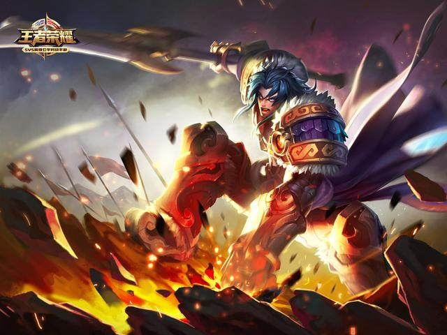
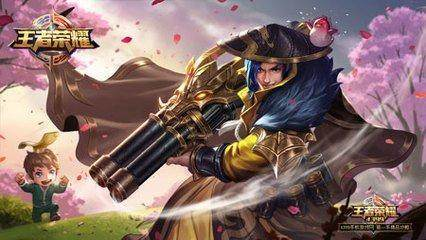
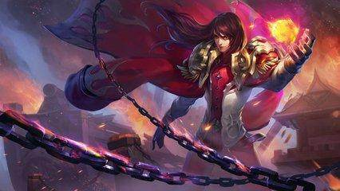
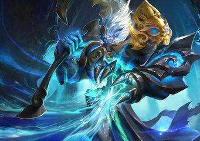

快速梳理王者荣耀人物历史顺序，做一个有文化的王者
百家号17-06-0818:00
一.神话系

东皇太一（无形的天帝，曾是祭祀的最高神，主宰宇宙星辰）后裔（十日齐出，祸害苍生，羿射九日，只留一日，夏天感谢什么空调之父威利斯，没后裔你们都得死）太乙真人（元始天尊的第五位弟子，哪吒老师，擅长生物技术，给哪吒弄个三头六臂，游戏中大招复活有一定道理哈）孙悟空（踏南天，碎凌霄，若一去不回，便一去不回！大圣不多说）杨戬（三只眼，神仙与凡人结合而生，力大无穷，法术无边）牛魔（牛魔王，主要出现在西游记中，传人物起源高僧鸠摩罗什，鸠摩王）
二.商周系

- 姜子牙（姜太公，辅助姬发建立周朝，封神之人，太公在此，诸神退位）
- 哪吒（陈塘官总兵李靖之子，悟空的好基友）
- 妲己（苏姓，字妲，被九尾之狐附身，纣王宠妃）
三.春秋战国系

老夫子（老子，姓李名耳，道家创始人之一）墨子（名翟，墨家创始人，兼爱非攻，诸子百家中唯一一个很科学的学派）庄周（庄子，道教人物，看他的东西能看到让你怀疑整个世界都是假的）鲁班七号（子公输，超级大木匠，现在就是大国工匠，啥都会做） 芈月（芈八子，秦宣太后，风流强势的女boss） 白起（强秦虎狼，一代战神，血刃百万）廉颇（赵国名将，白起劲敌，廉颇老矣，尚能饭否？）孙膑（齐国人，孙武之后，与庞涓同为鬼谷子徒弟） 嬴政（秦始皇，奋六世之余烈，一扫六合，问鼎中原）阿轲（荆轲，刺杀嬴政未遂。一场毫无意义的行动，一个愚蠢的刺客）高渐离（燕人，著名乐师，荆轲的好友，荆轲刺秦时曾为其击筑送行，后也因刺杀嬴政失败被杀）钟无艳（齐宣王之妻，中国古代四大丑女之一，但很有才啊啊啊！）
四.秦汉系

- 项羽（西楚霸王，一代英豪，奈何不敌刘邦厚黑学）
- 虞姬（项羽爱妾，容颜倾城，才艺并重）
- 刘邦（汉高祖，以不要脸得天下，中国厚黑学创始人）
- 张良（刘邦军师，运筹帷幄，决胜千里之外）
- 韩信（刘邦大将，韩信点兵，多多益善，最后谋反（有待考证）惨死吕后之手）
- 王昭君（昭君出塞，嫁入匈奴，一生侍奉两代单于，33岁就死在了荒北大漠）
五.三国系
曹魏篇

曹操（乱世之枭雄，挟天子以令诸侯）
- 扁鹊（一代神医，为曹操治疗头疾，后被其杀）
- 蔡文姬（曹操好友蔡琰之女，一代才女）
- 夏侯惇（曹操大将，独眼将军，一生好学专师）
- 典韦（ 曹操部将，后因张绣叛乱，保护曹操而死）
- 甄姬（魏文帝曹丕的妾室，魏明帝曹叡之生母）
- 吕布（三姓家奴，方天画戟，谁人敢敌，后被曹操所杀）
- 貂蝉（四大美女之一，本为王允义女，后被吕布看上，最后为其殉情而死）
蜀汉篇

- 刘备（字玄德，蜀汉开国皇帝，汉昭烈帝）
- 关羽（关二爷，字云长，现为财神爷化身，最后败走麦城，惨死）
- 张飞（刘备三弟，字翼德，后被范强、张达刺杀）
- 诸葛亮（字孔明，蜀汉丞相，白帝城托孤，五伐中原，最后病于五丈原）
- 赵云（常山赵子龙，蜀汉名将，截江救阿斗）
- 黄忠（五虎上将之一，定军山怒斩夏侯渊，老当益壮）
- 刘禅（刘备之子，蜀汉后主，后投降于魏）
东吴篇

周瑜（孙吴大都督，文武双全，奈何既生亮，何生瑜）大乔（东吴大家乔氏千金，孙策之妻，孙权之嫂，绝世美女）小乔（大乔妹妹，周瑜之妾，一代才女）孙尚香（孙权之妹，刘备之妻，性格刚烈，武功了得）
六.南北朝系

- 花木兰（鲜卑北魏拓跋焘时期，替父从军，抗击柔然）
- 兰陵王（本明高长恭，北齐高欢之孙，据说容貌俊美，观其一生，可谓完美）
- 达摩（中国禅宗的始祖，曾会谈南梁武帝萧衍，但没谈拢。面壁九年，传衣钵于慧可）
七.大唐系

- 钟馗（唐初人物，生铁面虬鬓，相貌奇异，但学富五车，才高八斗，据说能打鬼驱除邪祟）
- 程咬金（随唐太宗李世民破宋金刚，擒窦建德，降王世充，在玄武门之变更是立下大功，被封骠骑大将军）
- 武则天（李世民儿媳妇，历史上第一位女皇帝，改唐为周，堪为传奇）
- 狄仁杰（位至丞相，一代神探啊，曾犯颜直谏，力劝武则天立庐陵王李显为太子，使李唐江山得以延续）
- 李元芳（神探狄仁杰里的影视人物，历史不存在，狄仁杰贴身保镖。大人这赛季我这么弱，您怎么看啊?）